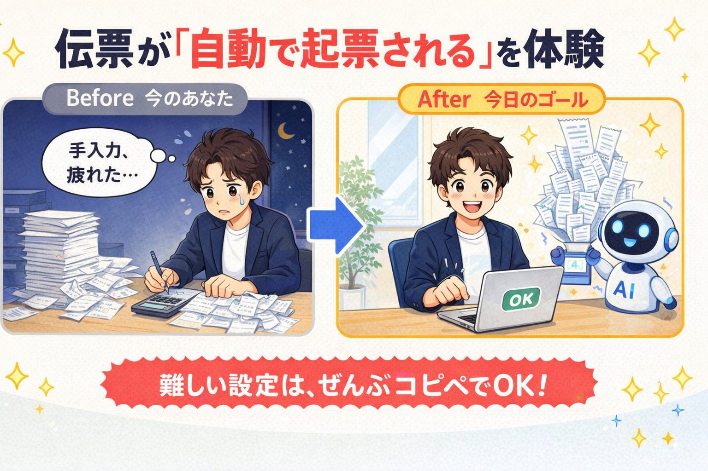
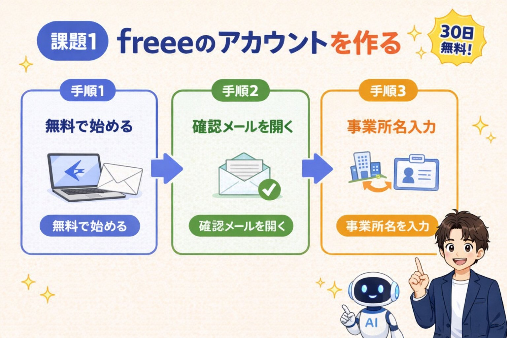
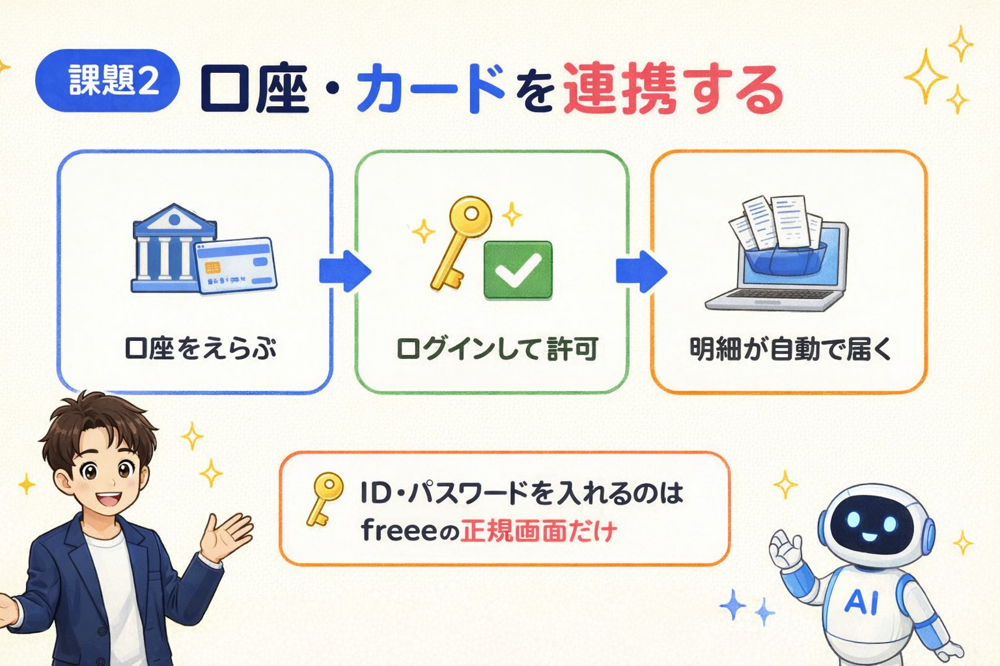
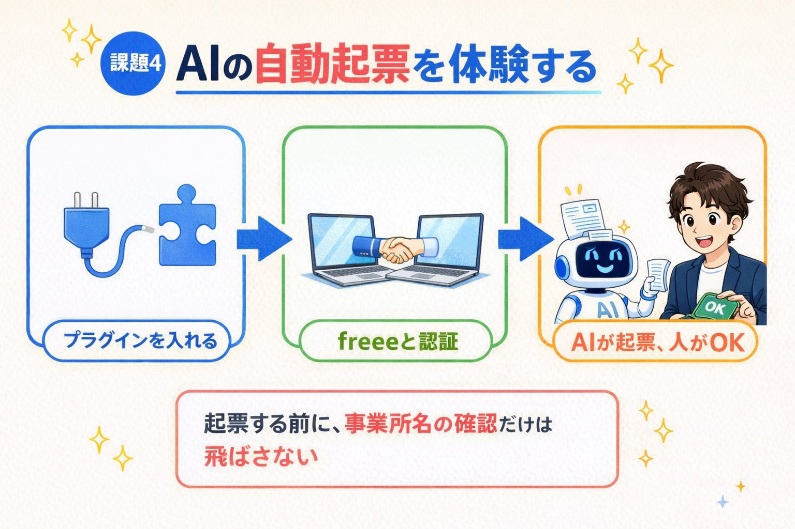
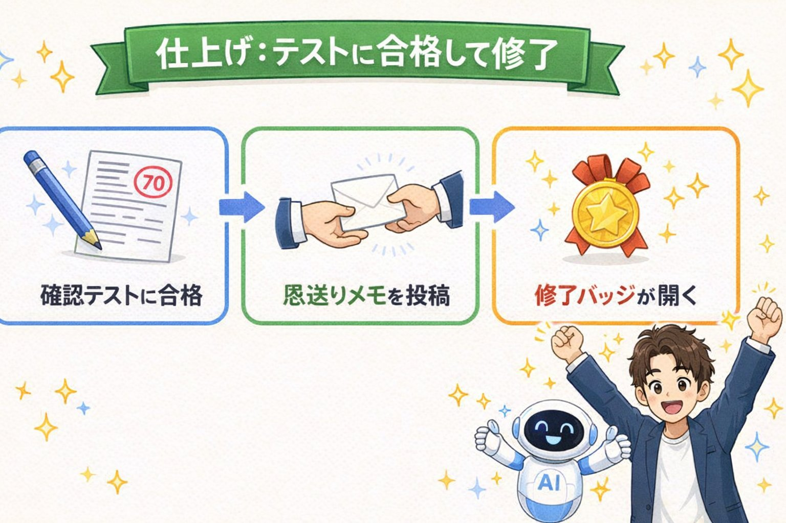

freee × Claude Code で
「伝票が自動で起票される」を体験する
AIに話しかけるだけで、freeeに取引が起票される。その第一歩を、今日この場で動かすところまで進めていただきます。

🎯 この課題を終えると…
- クラウド会計 freee と AI Claude Code がご自身のPCでつながります（freeeは30日間のお試し期間でOK。期間終了後の継続は有料プランのご契約が必要です）
- 口座・カードの明細を材料に、AIが自動で伝票を起票する瞬間を体験いただけます
- 最後に確認テスト（AIが先生役・70点以上で合格）を受け、恩送りメモを投稿すると修了です🏅
👉 修了条件は4つのチェック＋恩送りメモの投稿の5つです。全部そろうと、いちばん下で修了バッジ🏅が開きます。
🧭 あなたの状況で、進み方が少し変わります
| こんな方 | 今日の進み方 |
|---|---|
| 今日が初参加 | ①から順にどうぞ。飛ばさず上から進めるのがいちばん速いです |
| freeeのアカウントを持っている | ステップ①は飛ばしてOK。ステップ②から始めてください |
| 口座連携が今日は間に合わない | ステップ②はチェックだけ入れて先へ。ステップ④のコピペ文②がテスト取引に切り替えて同じ体験をさせてくれます |
| Claude Codeをすでに使っている | ステップ③はProプラン課金が済んでいるかの確認だけでOKです |
| 複数の事業所につながる （税理士・複数社経営の方） | そのまま進めますが、ステップ④の「事業所名の確認」だけは絶対に飛ばさないでください。今日いちばん防ぎたい事故です |
freee のアカウントを作る 🏦

まずは伝票が起票される「箱」づくりです。すでにfreeeのアカウントをお持ちの方は、下のチェックだけ入れてステップ②へ進んでください。
- freee公式サイト を開く
- 「無料で始める」からメールアドレスで登録
- 確認メールのリンクを開いて本登録
- 事業所名（屋号や会社名／個人なら自分の名前でOK）を入力
- ログイン後、ダッシュボードが表示されれば完了です
🛠 迷ったとき・トラブル
- 確認メールが来ない → 迷惑メールフォルダをご確認ください。数分待っても来ない場合は再送してください。
- 事業所名はあとで変えられる？ → はい、設定からいつでも変更できます。気軽に進めていただいて大丈夫です。
- 練習用に新しい事業所を作るべき？ → 顧問先など本番のデータがあるfreeeをお使いの方は、練習用の事業所を新しく作るのがおすすめです。今日は「AIが起票する流れ」を体験するのが目的なので、間違えても実害のない場所で試すのが安心です。
銀行口座・クレジットカードを連携する 🏧

取り込まれた明細が、ステップ④で「AIが自動で起票する」材料になります。すでに連携済みの方は飛ばしてOKです。
- freeeにログインし、左メニューの「口座」（または「自動で経理」）を開く
- 「新しく口座を登録」→ 連携したい銀行・クレジットカード会社を検索
- 各金融機関のネットバンキングID・パスワードを入力してログイン許可
- 同期が始まったら完了です。初回は明細の取り込みに数分〜数十分かかることがあります
🛟 今日は口座連携までできない方へ（戻り道）
口座連携は後日でまったく問題ありません。ステップ④のコピペ文②が、明細が無い方にはテスト取引に切り替えて同じ流れを案内してくれるので、今日のメイン体験は最後までできます。
- 連携せずに進む方は、下のチェックに「連携不要と判断した」の意味でチェックを入れてOKです
- ネットバンキングのID・パスワードが手元にない方も、無理に探さず後日にしてください
- 連携せずに明細を取り込みたい場合は、明細のCSV取込という方法もあります（当日サポートいたします）
🛠 迷ったとき・トラブル
- 連携したい銀行が見つからない → 銀行名・支店名で再検索してください。それでも出ない場合はCSVでの明細取込に切り替えられます（当日サポートいたします）。
- 明細がなかなか出てこない → 初回同期は時間がかかることがあります。10〜20分待っても出ない場合は「今すぐ同期」を再実行してください。
- 連携自体に料金はかかる？ → 新規登録から30日間のお試し期間中は無料で口座連携を使えます。お試し期間後も連携を続けるには有料プランのご契約が必要です（未契約のままだと連携が解除されます）。
- すでに連携済みで、未処理の明細がない → ステップ④のコピペ文②で「B：テスト取引」を選べば、同じ流れを体験できます。
Claude Code をインストールする 💻
AIに自然な言葉で指示できるデスクトップアプリ「Claude Code」を入れます。ターミナル（黒い画面）は不要です。インストール手順は事前に共有しているUnikoukokunさんの課題ページを見ながら進めてください。
- こちらのページを開く → Unikoukokunさんの課題ページ（課題1-1）
- 「課題1-1」の手順に沿って、Mac / Windowsどちらかご自身のPCに合う方でインストール（この手順の中で、Claude Codeのインストール〜デスクトップアプリの起動まで一通り完了します）
- アカウント作成は「Googleで続ける」から、ふだん使っているGoogleアカウントを選ぶだけでOK
- Claude を課金（Proプラン・月額制／約22ドル＝3,300円前後）する。課金しないとClaude Codeは動きませんので、ここは必須です
- （Gitが必要と案内された場合のみ）Mac は GitHub Desktop、Windows は git-scm.com からGUIインストール。インストール後はPCを再起動するかアプリを開き直す
🛠 迷ったとき・トラブル
- Googleアカウントがない → メールアドレスでの新規登録も可能です。当日サポートいたします。
- Gitを案内されたけどよく分からない → アプリの案内に従ってGUIインストールするだけでOKです。コマンド入力は不要です。
- インストールしたのに反応しない → アプリを完全に閉じて開き直してください。それでも直らない場合はPCを再起動してください。
- 作ってもらったmd（メモ）ファイルはどこで見る？ → Wordなど別アプリは不要で、Claude Codeアプリのファイル一覧（サイドバー）からそのまま読めます。見当たらないときは、AIが答えたファイル名で探すと見つかりやすいです。
- 課金をあとにしたい → 気持ちは分かるのですが、課金前だとステップ④が動きません。今日体験まで進みたい方は、ここで済ませてしまうのが結果的にいちばん早いです。
freee MCPをつないで、自動起票を体験する 🔌

ここが第1回の本丸です。貼るコピペ文は2つだけ。①でプラグインを入れてアプリを開き直し、②を貼れば、認証から起票体験・完了案内まで、あとはClaudeがリードしてくれます。ターミナル（黒い画面）は使いません。
| やること | 使うもの | |
|---|---|---|
| ① | freee MCPプラグインを入れる → アプリを開き直す | コピペ文① |
| ② | freeeと認証 → AIが起票 → あなたがOK（体験のすべて） | コピペ文②（明細が無い方もこの1本でOK） |
- Claude Codeデスクトップアプリを開き、新しいチャットを開始する
- 下のコピペ文をそのままチャット欄に貼り付けて送信する（freee公式が配布している正規のプラグインを、Claude自身がインストールしてくれます）
- 途中で「このコマンドを実行してもよいですか？」のような許可の確認が表示されたら、内容を読んで「許可」を選ぶ
- Claudeから「インストールが完了しました」の報告が来たら、アプリを一度完全に終了して、開き直す（開き直すことで、追加したプラグインが読み込まれます）
freee会計とClaude Codeを連携したいので、freee公式のMCPプラグインを このPCにインストールしてください。 やることは、次の2つのコマンドを順番に実行するだけです。 1. claude plugin marketplace add freee/freee-mcp 2. claude plugin install freee-mcp@freee-mcp-marketplace 進め方のルール： - 私はコマンドに詳しくないので、それぞれが何をするものかを 1行ずつ、実行の前に説明してください - 実行に私の許可が必要な場面では、必ず先に聞いてください - 上の2つ以外のコマンドを勝手に足したり、別の方法に切り替えたり しないでください。うまくいかないときは、そこで止めて相談してください - git が入っていなくてエラーになった場合は、 「git のインストールが必要です」と教えてください（入れ方の案内もお願いします） 終わったら、次の3つを報告してください。 1. インストールが成功したかどうか 2. エラーが出た場合は、そのエラー文と、原因と、私がやるべきこと 3. 次に私が何をすればよいか（アプリの再起動が必要かどうかも含めて）
- 開き直したClaude Codeデスクトップアプリで、下のコピペ文②を送信する
- ブラウザでfreeeのログイン画面が自動で開く → freeeにログインして「許可する」→ 連携する事業所を選ぶ。複数の事業所が並ぶ方（税理士・複数社経営の方）は、顧問先など本番の事業所を選ばないよう名前をよく確認してください
- あとはClaudeが「事業所名の確認 → 起票内容の提案 → あなたのOK → 登録 → 完了の案内」まで順番に進めてくれます。あなたがするのは、内容を読んで「OK」と返すことだけです
※ 権限はログイン中のfreeeユーザーと同じ範囲に限定されます。口座連携がまだで明細が無い方も、この1本でOKです（Claudeがテスト取引に切り替えて、同じ流れを案内します）。
freee MCPの認証から、AIによる自動起票の体験まで、 この1通で最後まで案内してください。 今日のゴールは「AIがfreeeに伝票を1件起票するのを、 私が内容を確認して承認する」体験です。 【全体の流れ】 1. 認証 → 2. 事業所名の確認 → 3. 起票の体験（1件だけ） → 4. 完了の案内 【1. 認証】 ブラウザでfreeeのログイン画面を開いてください。 私がfreeeにログインして「許可する」を押し、使う事業所を選びます。 【2. 事業所名の確認（いちばん大事）】 接続できたら、いまつながっている事業所名を教えてください。 私が事業所名を確認して「OK」と言うまで、絶対に先へ進まないでください。 もし顧問先など本番の事業所につながっていたら、登録せずにその場で止めて、 事業所の切り替え方法を教えてください。 【3. 起票の体験】 freeeに同期されている未処理の取引明細（自動で経理）があるかを確認して、 次のどちらで進めるかを私に聞いてください。 A：同期済みの明細から1件起票する（口座連携が済んでいる方） B：テスト取引で起票する（明細がまだ無い方。本日付で 「消耗品費 1,100円（税込）／現金」を1件） 私が「お任せ」と答えたら、状況に合う方をあなたが選んでください。 Aで進める場合： 1. 未処理の明細を1件だけ見せる 2. 勘定科目の候補を提案する。なぜその科目にしたのかも1行で添える 3. その明細が、既存の未決済取引（請求書・給与などの未払い）の支払に あたる場合は、新規の取引ではなく、 その未決済取引への決済登録として処理する 4. 登録しようとしている内容（日付・金額・勘定科目・取引先）を先に見せる 5. 私がもう一度「OK」と言ったら、その内容でfreeeに登録する Bで進める場合： 1. 登録しようとしている内容（日付・金額・勘定科目・決済方法）を先に見せる 2. 私が「OK」と言ったら登録する 3. あわせて、このテスト取引を消したくなったときの削除手順も教えてください 【4. 完了の案内】 登録が終わったら、次のことを順に教えてください。 - freeeのどの画面を見れば、いま登録された取引を確認できるか - （Aの場合）登録しても「自動で経理」側の明細は未処理のまま残ること。 二重登録を防ぐために、freee画面でその明細を「無視」にするか、 登録済みの取引と手動で紐づける必要があること - 最後に「課題ページに戻って、ステップ④のチェック『AIが起票した取引が、 freeeの取引一覧に表示された』を押してください。次は確認テストです」 と案内して締めてください 大事なルール： - 私のOKなしに登録しないでください。今日登録するのは1件だけです - 明細の中身を勝手に書き換えたり、複数件をまとめて登録したりしないでください - アクセストークン・APIキーの値そのものは画面に出さないでください （「接続できました」と事業所名だけで十分です） - 分からない項目は推測で埋めず、「分かりません」と正直に言ってください - エラーが出たら、エラー文をそのまま見せて、 私がやるべきことを1つずつ教えてください
- 複数の事業所につながる可能性がある方（税理士・複数社経営の方）は、起票前に必ず「いま接続している事業所名」を確認してください。顧問先など別の事業所への誤登録が、今日いちばん防ぎたい事故です（上のコピペ文には確認の一文を入れてあります。消さないでください）。
- 必ず「登録前に内容を見せて」と添えて確認してから登録させてください（最初は少額・少件数で）。
- 登録した後も、freeeの「自動で経理」には同じ明細が未処理のまま残ります（消込APIが無いため）。二重登録を防ぐため、登録後にfreee画面で該当明細を「無視」にするか、手動で紐づけてください。
🛠 迷ったとき・トラブル
- 🟥 ①で「gitが見つかりません」のようなエラーが出る → プラグインの取得にGitというツールが必要です。ステップ③の手順5と同じ方法（Mac＝GitHub Desktop／Windows＝git-scm.comからGUIインストール）でGitを入れて、PCを再起動してから①をやり直してください。
- 🟥 ②を送っても「freeeのツールが見つからない」と言われる → ①のあとのアプリ再起動がまだの可能性が高いです。アプリを完全に終了して開き直してから（タスクトレイ・Dockに残っていないかも確認）、もう一度②を送信してください。
- 🟥 Claudeが「claudeコマンドが見つからない」と言う → Claude Codeアプリが古い可能性があります。アプリを最新版に更新して開き直し、もう一度①のコピペ文を送信してください。
- 🟥「/plugin ...」だけを貼ったら反応しない → 「/」で始まるコマンドの断片だけを貼ると、チャットでは動きません。必ず上のコピペ文をまるごと貼って、Claudeに実行をお願いしてください。
- 🟥 認証はOKなのに「事業所が見つからない」 → freeeにログインしている事業所と、認証時に選んだ事業所が同じか確認してください。
- 🟥 起票したのにfreeeに出ない → 取引一覧の日付フィルタを確認してください。今日の日付に絞って再表示すると見つかります。
- 🟥 登録したのに「自動で経理」の明細が未処理のまま残る → これは仕様です。明細側の消込を行うAPIがfreeeから提供されていないため、freee画面で該当明細を「無視」にするか、登録済みの取引と手動で紐づけてください。放置すると二重登録の原因になります。
- 🟥 違う事業所に登録してしまった → あわてなくて大丈夫です。まずその事業所のfreee「取引」一覧から該当の取引を削除してください。そのあとClaudeに「接続する事業所を切り替えて」と頼んで、正しい事業所につなぎ直します。
- テストで起票した取引を消したい → freeeの「取引」一覧から該当の取引を開いて削除できます。Claudeに「さっきテスト起票した取引を削除して。削除前に内容を見せて」と頼んでもOKです。
- プラグインが見つからない／インストールに失敗する → チャットで「freee-mcpのマーケットプレイスが追加されているか確認してください」と送信して状態を確認し、もう一度①からやり直してください。
- 認証のブラウザ画面が開かない → チャットで「freeeの認証をもう一度やり直してください」と送信してください。それでも開かない場合はアプリを再起動してから再送します。
- 権限エラー → freee側でアプリ連携を「許可」したか再確認してください。チャットで「freee MCPの接続状態を確認してください」と送信して調べてもらうのもアリです。
- 同期明細が1件も出てこない → ステップ②の口座連携がまだの可能性があります。コピペ文②で「B：テスト取引」を選んで体験を進めてOKです。
時間がある人向け：AI事務所テンプレート一式を入れる
ここまでで「自動起票デビュー」は完了です。時間に余裕がある方だけ、ここから先に進んでみてください。畠山から配布している「AI事務所テンプレート一式」を使うと、Claude Codeにあなた専用のキャラ・事務所ルール・安全ロック・記憶機能を一気に持たせられます。
- ① md設定：AIの名前・性格、事務所のルール（CLAUDE.md）
- ② セキュリティ：
.env誤読み取り・外部送信・rm -rf事故を防ぐロック - ③ メモリ：「前にも言いましたよね」を実現する記憶の仕組み
- ④ Hooks：長い会話・要約後も前提を忘れない仕掛け
📋 進め方を開く（GitHubアカウント作成 → 非公開コピー作成 → 開く → 設置。約20分＋設置1時間）
- github.com/signup を開く
- メールアドレス → パスワード → ユーザー名（ローマ字。全世界に公開されるので、本名でなくてもOKです）の順に入力
- メールに届いた確認コードを入力して登録完了。無料プランのままでOKです（課金は不要）
- GitHubにログインした状態で、github.com/new/import（リポジトリのインポート画面）を開く
- いちばん上のURL入力欄に
https://github.com/fromk0326-boop/haifuyouを貼り付ける（ユーザー名・パスワード等の欄が出ても空欄のままでOK） - 「Repository name」（リポジトリ名）に
haifuyouと入力し、必ず「Private（非公開）」を選ぶ - 「Begin import」を押して数分待つ。完了画面が出たら、教材一式が自分のGitHubに非公開で複製されています。受け取りはこれで完了です
※ ページ右上の「Fork」ボタンは使いません。フォークは必ず全世界に公開され、あとから非公開にできないためです。インポートで作った非公開コピーなら、第5回で育てるルール表や作業ファイルが外部に見えることはありません。ローカルにダウンロードして持つのではなく、まず自分のGitHubに複製を持つのがこの講座の基本形です。ここがブラウザ版Claude Codeの作業場になり、第5回でルール表を「育てる」場所にもなります。教材が更新されたら、Claude Codeに「配布用リポジトリから最新を取り込んで」と頼めば追いつけます。
- 🌐 ブラウザ版Claude Code：claude.ai/code → 新しいセッション → 自分の非公開リポジトリ（haifuyou）を選ぶだけ。ダウンロードは不要です
- 💻 デスクトップ版（今回のテンプレート設置はこちら）：下のコピペ文で、クローン（PCへの取り込み）をClaude自身にやってもらいます
私のGitHubアカウントに複製（インポート）した教材リポジトリを、
このPCに取り込みたいです。
リポジトリは https://github.com/{{あなたのGitHubユーザー名}}/haifuyou で、
非公開（Private）です。
やってほしいこと：
1. gitが入っているか確認して、無ければインストールから案内してください
2. ドキュメント配下の分かりやすい場所にクローンしてください
（非公開リポジトリなので、途中でGitHubへのログインが必要になったら
教えてください。画面の指示に沿って私がログインします）
3. 終わったらそのフォルダを開いて、
中に何が入っているかを簡単に説明してください
大事なルール：
- 保存先を決める前に、どこに置くつもりかを教えてください
- 私のPCにある既存のフォルダを、上書きしたり消したりしないでください
- GitHubのパスワード・トークンの値を、画面に表示しないでください
- うまくいかないときは、エラー文をそのまま見せて、
私がやるべきことを1つずつ教えてください
※ クローンで取り込むと、教材の更新は「配布用リポジトリ（https://github.com/fromk0326-boop/haifuyou ）から最新を取り込んで」の一言で取り込めて、自分が育てたルール表を自分のGitHub（非公開）に保存もできます。gitがどうしてもうまく入らない場合だけ、自分のリポジトリのページで「Code」→「Download ZIP」→右クリック「すべて展開」の代替ルートでもOKです（この場合、更新のたびにZIPの取り直しになります）。
.claude/… 今回（第1回）使うのはここだけ。Claude Codeのセットアップ4点セットが入っています第3回_freeeオート経理/… 第3回で使う資料とルール表第4回_Chrome拡張/… 第4回で使うブラウザ拡張README.md/CLAUDE.md/.gitignore… キット全体の説明と共通設定。場所を動かさないでください
※ ルールはシンプルで、読む資料は「回ごとのフォルダ」、動かすプログラムは .claude/skills/。回が進むごとにフォルダが増えていくだけなので、今は .claude/ だけ見ていれば大丈夫です。
- Claude Codeで、取り込んだ
haifuyouフォルダを開く（この中の.claudeフォルダが第1回のテンプレート一式です。先頭がドットのフォルダは「隠しフォルダ」で、エクスプローラー／Finderでは見えないことがありますが、Claude Codeからはそのまま扱えるので気にしなくて大丈夫です） - 下のコピペ文を会話画面に貼って送信（{{ }}の部分はご自身の情報に書き換えてください）
※ このテンプレート一式（キャラ設定・セキュリティ・メモリ・Hooks）は、ご自身のPCのClaude Codeに設置するものなので、この手順はデスクトップ版で進めてください。
このフォルダ（配布キット）の .claude フォルダに、
Claude Codeのセットアップ一式（4点セット）が入っています。
.claude/README.md を読んで、書かれている順番
（①md→②セキュリティ→③メモリ→④Hooks）の通りに、
私のPCへの設置を進めてください。
私は{{税理士／会計士／社労士／行政書士／弁護士／その他}}で、
事務所名は「{{あなたの事務所名}}」です。
進め方のルール：
- .claude/docs/ にある各手順書に書いてある内容に沿って進めてください
- .claude/skills/ は第3回のキット専用なので、
私のPCの .claude にはコピーしないでください
- カスタマイズに必要な情報（名前・呼び方・キャラの性格など）は、
その都度1問ずつ私に聞いてください
- settings.json など既存の設定ファイルを変更する前に、必ず日付つきの
バックアップコピー（例: settings.json.bak_YYYYMMDD）を作ってください
- 既存ファイルの上書き・バックアップなど、確認が必要な場面では
必ず先に私に確認してください
- 1つ終わったら、「①が終わりました。②に進みますか？」のように
区切って報告してください
全部終わったら、最後に次の2つを教えてください。
1. 何をどこに設置したかの一覧（バックアップを作ったファイルも含めて）
2. ちゃんと動いているかを確かめる「動作確認の手順」
あとはClaude Codeが質問してくるので、答えながら進めるだけです。「コードが分からないから無理」と思う必要はありません。一気に4つ進めるのが不安なら「まずは①だけ進めてください」と区切ってお願いしてもOKです。
- 既存ファイルの上書きが発生する場面ではClaude Codeが確認を挟む設計になっています。よく分からないまま「はい」を連打せず、聞かれたら内容を読んでから答えてください。特に「②セキュリティ」「④Hooks」で触る
settings.jsonは、壊れるとClaude Codeの動作に影響します。上のコピペ文に「変更前にバックアップを作る」ルールを入れてあるので、バックアップができたことを確認してから先に進んでください。 - 自分の複製が「Private（非公開）」になっているか、リポジトリ名の横の表示で確認してください。「Public」と表示されている場合（以前の案内のフォークで受け取った場合など）は全世界に公開されています。秘密情報（
.env・トークン等）は除外設定済みなので通常は安全ですが、非公開であっても請求書PDFや顧問先の資料など、自分のファイルをリポジトリにアップロード（コミット）しないのが原則です。
🛠 迷ったとき・トラブル
- 設定したのに反映されない → Claude Codeを完全に再起動してください（タスクトレイに残っていないかも確認）。
.claudeフォルダが見つからない → 隠しフォルダなので「隠しファイルを表示」をONにしてください。一度Claude Codeを起動すると自動で作られます。- GitHubアカウントの作成でつまずいた（確認コードが届かない等） → 迷惑メールフォルダをご確認ください。「パズル認証」が出た場合は画面の指示どおりに進めればOKです。どうしても進めない場合は、アカウントなしでも配布用リポジトリから直接「Code」→「Download ZIP」で資料は受け取れます（非公開コピーの作成は後日でOK）。
- インポート画面が開けない・「Begin import」が押せない → GitHubにログインしているかご確認ください（未ログインだと複製できません）。スマホ表示だと分かりにくいので、PCのブラウザで開くのがおすすめです。
- 以前の案内どおり「Fork」で受け取ってしまった → フォークは公開されたままになるため、上の手順②で非公開コピーを作り直してください。育てたルール表がある場合の引っ越しと、フォークの削除手順は第5回課題ページの「受け取り方法の変更」をご覧ください。
- ダウンロードして解凍したらフォルダ名が文字化けした → Windows標準の解凍機能で起きることがあります。7-Zipなどの解凍ソフトで解凍し直してください。化けたままでも、Claudeに「このフォルダの中身を確認して、.claude/README.mdの順に進めて」と頼めば中身から判断して進めてくれます。
- settings.jsonを触ったらClaude Codeがおかしくなった・エラーが出る → 変更前に作ったバックアップ（settings.json.bak など）を元のファイル名に戻せば復旧します。直し方が分からなければ、エラーメッセージごとClaudeに貼り付ければ直してくれます。
- hooksを設置したのに反応しない → Claudeに「hooksファイルの実行権限と改行コード（CRLF/LF）を確認して、問題があれば直して」と頼んでください。ZIPやドライブ経由で受け取ったファイルで起きがちなつまずきです。
- 書いたはずのメモリが読まれない・消えた？ → メモリは「Claude Codeで開いたフォルダ」ごとに保存されます。設置したときと同じフォルダを開き直してみてください。
- このステップは今日できなかった → 問題ありません。次回以降のブートキャンプで進めればOKです。
確認テストを受ける（合格すると恩送りメモが出ます）

ステップ①〜④が終わったら、Claude Code に先生役をお願いして、今日の理解チェックを受けてください。70点以上で合格（何回でも再挑戦OK・責められません🌸）。合格すると、Claudeが今日の体験を1問ずつインタビューしてくれて、その答えがそのまま「恩送りメモ」になります。Claudeが体験談を代筆することはありません。うまく言葉にできなくても、質問で引き出してくれるので大丈夫です。
第1回の課題（freeeアカウント作成／口座・カード連携／
Claude Codeインストール／freee MCP接続・自動起票）の
理解チェックをお願いします。合格するまで、恩送りメモは出さないでください。
【テストの進め方】
1. この課題の内容から、選択式（A/B/C）のクイズを2問 → 自由記述
（自分の言葉で説明する問題）を1問、1問ずつ順番に出して。
「AIに登録させる前に、人が必ずやること
（つないでいる事業所名の確認・登録内容の確認）」に関する問題を
必ず1問入れて。
2. 全部答え終わったら100点満点で採点して、点数と理由を短く伝えて。
3. 70点以上で合格 → インタビューへ。70点未満なら、間違えた所をやさしく
解説してから、別の問題でもう一度出して（何回でもOK・責めないで）。
4. 選択肢に「お任せ」は付けないで（自分で考えて答えるテストのため）。
【合格したら：インタビュー】
恩送りメモの中身は、あなた（AI）が想像で書かないでください。
私の体験を聞き出して、私が話した言葉だけで作ります。
次の5問を、1問ずつ・自由入力で聞いてください
（選択式にしない・まとめて聞かない）。
Q1. 今日いちばん時間がかかった／詰まったのはどこ？
そのとき画面には何と出ていた？
（エラー文・ボタン名・画面の名前は、思い出せる範囲でそのまま）
Q2. それはどうやって抜けた？（自分でやったこと、Claudeに何と頼んだか）
Q3. AIがfreeeに起票したのを見た瞬間、正直どう思った？（一言でOK）
Q4. 今日いちばん「危ないな」と思ったこと、または気をつけたことは？
Q5. この課題ページで分かりづらかった所・直してほしい所はありましたか？
（1行でもOK・思いつかなければ『特になし』でOK）
インタビューのルール：
- 答えが短くても責めないで。ただし一言だけの答えには、1回だけ
「たとえばどんな場面？」と具体化を促して。それでも出てこなければ、
そのまま次へ進んで。
- 「思い出せない」「特にない」と言われたら、思い出す手がかりとして、
この課題で実際に起きがちな場面を3つほど挙げて「近いものはある？」と
聞いてOK。ただし当てはまらなければ「なし」のまま進めて。
私が言っていないことを、あなたが代わりに書かないで。
- 私の答えを、立派な文章に書き換えないで。言い回しは私のまま、
誤字と重複だけ直す程度にして。
【恩送りメモの出力】
インタビューが終わったら、「恩送りメモ」という見出しで、チャットから
そのままコピペできる1つのコードブロックとして出力して。
・1行目は必ず「確認テスト：◯点（◯回目で合格）」にする
・続けて、私がQ1〜Q4で話した内容を、話した順に体験談としてまとめる
・最後に、Q5の答えを「💬 課題ページへの改善案：」の行として原文のまま
入れる（『特になし』なら省略OK）
・長さは私が話した分だけでいい。8行に届かなくてもOK。足りないからといって、
私が言っていない体験・感想・エラー文を足さないで。盛るくらいなら短い方がいい
・私が挙げたエラー文・ボタン名・画面の名前は、要約で削らずそのまま残して
（次の受講生に一番効く情報のため）
※ 事業所名・顧問先名・取引先名・具体的な金額・個人情報・APIトークンなどの
秘密情報は、メモに絶対に入れないで（「◯◯な明細で」のように抽象化して）。
最後に「このメモをコピーして、課題ページの『恩送りメモを投稿して修了』に
貼れば修了です🎉」と締めて。
恩送りメモを投稿して修了 🏅
確認テストの最後にClaudeが出してくれた「恩送りメモ」を、そのまま下に貼って投稿してください。投稿すると修了バッジが解放されます🎉 あなたのつまずきと解決の記録が、次の受講生への一番のプレゼントになります。良かった点・改善してほしい点は、次回以降のブートキャンプ資料のアップデートに反映させていただきます。
❓ よくあるつまずき
会計の知識がなくても大丈夫？
Macでも同じようにできる？
料金はかかる？
口座連携が当日までに間に合わなかったら？
AIが提案した勘定科目が正しいか不安…
顧問先の事業所につないでしまわないか不安
途中で「使用上限に達しました」と表示された
確認テストに落ちたら？
🏅 修了バッジ：自動起票デビュー
4つのチェック＋恩送りメモの投稿がそろうと、ここで修了バッジが解放されます。
↑ 上に戻って進める